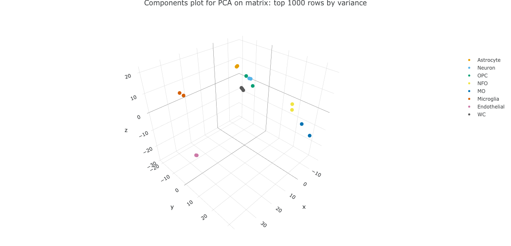

Interactive downstream analysis with ShinyNGS
Jonathan Manning
2026-07-18
Source:vignettes/shinyngs.Rmd
shinyngs.RmdIntro
shinyngs is a package designed to facilitate downstream analysis of RNA-seq and similar matrix data with various exploratory plots. It’s a work in progress, with new features added on a regular basis. Individual components (heatmaps, pca etc) can function independently and will be useful outside of the RNA-seq context.

Motivation
It’s not always trivial to quickly assess the results of next-generation sequencing experiment. shinyngs is designed to help fix that by providing a way of instantly producing a visual tool for data mining at the end of an analysis pipeline.
Features
- A variety of single and multiple-panel Shiny applications- currently heatmap, pca, boxplot, dendrogram, gene-wise barplot, various tables and an RNA-seq app combining all of these.
- Leveraging of libraries such as DataTables and Plotly for rich interactivity.
- Takes input in an extension of the commonly used
SummarizedExperimentformat, calledExploratorySummarizedExperiment - A Share view button in the navbar that captures the current selections (experiment, matrix, samples, genes, contrast filters, colouring and active panel) in the page URL and copies a shareable link to the clipboard, so a configured view can be shared or revisited by opening that link.
- A “Color palette” picker on every plot, defaulting to a colour-blind-safe categorical palette (Okabe & Ito, 2008), with RColorBrewer qualitative palettes offered as alternatives.
- Interface kept simple where possible, with complexity automatically
added where required:
- Input field clutter reduced with the use of collapses from shinyBS (when installed).
- If a list of
ExploratorySummarizedExperiments is supplied (useful in situations where the features are different beween matrices - e.g. from transcript- and gene- level analyses), a selection field will be provided. - If a selected experiment contains more than one assay, a selector will again be provided.
- For me: leveraging of Shiny modules. This makes re-using complex UI components much easier, and maintaining application code is orders of magnitude simpler as a result.
Installation
Prerequisites
shinyngs relies heavily on
SummarizedExperiment. Formerly found in the
GenomicRanges package, it now has its own package on
Bioconductor: http://bioconductor.org/packages/release/bioc/html/SummarizedExperiment.html.
This requires a recent version of R.
Graphical enhancements are provided by shinyBS and
shinyjs
Install with devtools
library(devtools)
install_github('pinin4fjords/shinyngs')Concepts and data structures
The data structures used by Shinyngs build on
SummarizedExperiment. One SummarizedExperiment
can have multiple ‘assays’, essentially matrices with samples in columns
and ‘features’ (transcripts or genes) in rows, representing different
results for the same features and samples. This is handy to compare
results before and after processing, for example.
ExploratorySummarizedExperiment extends
SummarizedExperiment to include slots relating to
annotation, and associated results of ‘tests’, providing p values and q
values.
ExploratorySummarizedExperimentList is a container for
one or more ExploratorySummarizedExperiment objects, and is
intented to describe an overall study, i.e. one or more experiments the
same set of samples, but different sets of features in each experiment.
The ExploratorySummarizedExperimentListList therefore is
used to supply study-wide things such as contrasts, gene sets, url roots
for creating links etc.
Simple example working from a SummarizedExperiment
To see how to quickly build an RNA-seq app from a simple
SummarizedExperiment, we can use the example data in the
airway package. We just convert the
RangedSummarizedExperiment to an ExploratorySummarizedExperiment, and
add it to a list of such objects, which represent a study.
library(shinyngs)
data(airway, package = 'airway')
ese <- as(airway, 'ExploratorySummarizedExperiment')
eselist <- ExploratorySummarizedExperimentList(ese)Then we build and run the app. For example, a basic app just for heatmaps:
app <- prepareApp('heatmap', eselist)
shiny::shinyApp(ui = app$ui, server = app$server)Note the use of prepareApp to generate the proper
ui and server, which are then passed to
Shiny.
We can build a more comprehensive app with multiple panels aimed at RNA-seq:
app <- prepareApp('rnaseq', eselist)
shiny::shinyApp(ui = app$ui, server = app$server)Airway provides some info about the dataset, which we can add in to the object before we build the app:
data(airway, package = 'airway')
expinfo <- metadata(airway)[[1]]
eselist <- ExploratorySummarizedExperimentList(
ese,
title = expinfo@title,
author = expinfo@name,
description = abstract(expinfo)
)
app <- prepareApp('rnaseq', eselist)
shiny::shinyApp(ui = app$ui, server = app$server)All this app knows about is gene IDs, however, which aren’t all that informative for gene expression plots etc. We can add row metadata to fix that:
# Add annotation to the object. Any source of per-gene annotation works here
# (a GTF, an annotation package, a pre-built CSV); the requirement is a
# data.frame keyed by the same IDs as rownames(ese). Adding
# chromosome_name/start_position/end_position columns plus ensembl_species
# (below) also enables the igv.js gene model view on the gene page.
annotation <- data.frame(
ensembl_gene_id = rownames(ese),
entrezgene = rownames(ese), # substitute real Entrez IDs
external_gene_name = rownames(ese), # substitute real gene symbols
chromosome_name = '1', # substitute real coordinates
start_position = seq_along(rownames(ese)),
end_position = seq_along(rownames(ese)) + 1000
)
annotation <- annotation[order(annotation$entrezgene),]
mcols(ese) <- annotation[match(rownames(ese), annotation$ensembl_gene_id),]
# Tell shinyngs what the ids are, and what field to use as a label
ese@idfield <- 'ensembl_gene_id'
ese@labelfield <- 'external_gene_name'
# Re-build the app
eselist <- ExploratorySummarizedExperimentList(
ese,
title = expinfo@title,
author = expinfo@name,
description = abstract(expinfo),
ensembl_species = 'hsapiens' # enables the igv.js gene model view
)
app <- prepareApp('rnaseq', eselist)
shiny::shinyApp(ui = app$ui, server = app$server)More complex use case: the zhangneurons Example
dataset
airway is fine, but it contains no information on
differential expression. shinyngs provides extra slots for
differential analyses, among other things.
An example ExploratorySummarizedExperimentList based on
the Zhang et al study of neurons and glia (http://www.jneurosci.org/content/34/36/11929.long) is
included in the zhangneurons package, and this can be used
to demonstrate available features. The dataset includes transcript- and
gene- level quantification estimates (as
ExporatorySummarizedExperiments within an
ExploratorySummarizedExperimentList, and three levels of
processing (raw, filtered, normalised) in the assays slots
of each.
Note: this data was generated using Salmon (https://combine-lab.github.io/salmon/) for quantification, and results may therefore be slightly different to the authors’ online tool (which did not use Salmon).
Install the data package:
library(devtools)
install_github('pinin4fjords/zhangneurons')… and load the data.
The data can then be used to build an application:
app <- prepareApp("rnaseq", zhangneurons)
shiny::shinyApp(app$ui, app$server)This example generates the full application designed for RNA-seq analysis. Remember that individual components can be created too:
app <- prepareApp("heatmap", zhangneurons)
shiny::shinyApp(app$ui, app$server)Building an application from a YAML file
An alternative and simple way to create an application is to describe your experiment using a YAML file, and pass the YAML file to Shinyngs. This has advantages where a pipeline produces many outputs outside of R which then have to be read and compiled.
The eselistFromYAML() function is provided to help
construct an ExploratorySummarizedExperiment object. You might make a
file like:
title: My RNA seq experiment
author: Joe Blogs
report: report.md
ensembl_species: hsapiens
group_vars:
- Group
- Replicate
default_groupvar: Group
experiments:
Gene:
coldata:
file: my.experiment.csv
id: External
annotation:
file: my.annotation.csv
id: gene_id
entrez: ~
label: gene_id
expression_matrices:
Raw:
file: raw_counts.csv
measure: counts
Filtered:
file: filtered_counts.csv
measure: Counts per million
Normalised:
file: normalised_counts.csv
measure: Counts per million
read_reports:
read_attrition: read_attrition.csv
contrasts:
comparisons:
0:
- Group
control
TreatmentA
1:
- Group
control
TreatmentB
stats:
Gene:
Normalised:
pvals: pvals.csv
qvals: qvals.csvYou can then generate the object with a command like
eselist <- eselistFromYAML('my.yaml'). This is how the
zhangneurons dataset was generated- see
vignette(zhangneurons) for details, and for the component
input files themselves.
The top-level ensembl_species key above is optional;
when set (and the annotation supplies chromosome_name,
start_position and end_position columns), it
enables the gene model view described under Included modules. Other optional top-level
keys include static_pdf (to switch static plot downloads to
PDF), url_roots (see Other
options), and gene_set_id_type plus
gene_sets (a named list of GMT file paths, one per gene set
collection) as a YAML-driven alternative to supplying gene sets via the
R constructor (see Gene sets).
Building an application from scratch
To demonstrate this, let’s break down zhangneurons into
simple datatypes and put it back together again.
Assays
# Assays is a list of matrices
library(zhangneurons)
data(zhangneurons, envir = environment())
myassays <- as.list(SummarizedExperiment::assays(zhangneurons[[1]]))## Loading required package: shinyngs## Loading required package: SummarizedExperiment## Loading required package: MatrixGenerics## Loading required package: matrixStats##
## Attaching package: 'MatrixGenerics'## The following objects are masked from 'package:matrixStats':
##
## colAlls, colAnyNAs, colAnys, colAvgsPerRowSet, colCollapse,
## colCounts, colCummaxs, colCummins, colCumprods, colCumsums,
## colDiffs, colIQRDiffs, colIQRs, colLogSumExps, colMadDiffs,
## colMads, colMaxs, colMeans2, colMedians, colMins, colOrderStats,
## colProds, colQuantiles, colRanges, colRanks, colSdDiffs, colSds,
## colSums2, colTabulates, colVarDiffs, colVars, colWeightedMads,
## colWeightedMeans, colWeightedMedians, colWeightedSds,
## colWeightedVars, rowAlls, rowAnyNAs, rowAnys, rowAvgsPerColSet,
## rowCollapse, rowCounts, rowCummaxs, rowCummins, rowCumprods,
## rowCumsums, rowDiffs, rowIQRDiffs, rowIQRs, rowLogSumExps,
## rowMadDiffs, rowMads, rowMaxs, rowMeans2, rowMedians, rowMins,
## rowOrderStats, rowProds, rowQuantiles, rowRanges, rowRanks,
## rowSdDiffs, rowSds, rowSums2, rowTabulates, rowVarDiffs, rowVars,
## rowWeightedMads, rowWeightedMeans, rowWeightedMedians,
## rowWeightedSds, rowWeightedVars## Loading required package: GenomicRanges## Loading required package: stats4## Loading required package: BiocGenerics##
## Attaching package: 'BiocGenerics'## The following objects are masked from 'package:stats':
##
## IQR, mad, sd, var, xtabs## The following objects are masked from 'package:base':
##
## anyDuplicated, aperm, append, as.data.frame, basename, cbind,
## colnames, dirname, do.call, duplicated, eval, evalq, Filter, Find,
## get, grep, grepl, intersect, is.unsorted, lapply, Map, mapply,
## match, mget, order, paste, pmax, pmax.int, pmin, pmin.int,
## Position, rank, rbind, Reduce, rownames, sapply, saveRDS, setdiff,
## table, tapply, union, unique, unsplit, which.max, which.min## Loading required package: S4Vectors##
## Attaching package: 'S4Vectors'## The following object is masked from 'package:utils':
##
## findMatches## The following objects are masked from 'package:base':
##
## expand.grid, I, unname## Loading required package: IRanges## Loading required package: GenomeInfoDb## Loading required package: Biobase## Welcome to Bioconductor
##
## Vignettes contain introductory material; view with
## 'browseVignettes()'. To cite Bioconductor, see
## 'citation("Biobase")', and for packages 'citation("pkgname")'.##
## Attaching package: 'Biobase'## The following object is masked from 'package:MatrixGenerics':
##
## rowMedians## The following objects are masked from 'package:matrixStats':
##
## anyMissing, rowMedians##
## Attaching package: 'shinyngs'## The following object is masked from 'package:MatrixGenerics':
##
## colMedians## The following object is masked from 'package:matrixStats':
##
## colMedians
head(myassays[[1]])## Astrocyte1 Astrocyte2 Neuron1 Neuron2 OPC1 OPC2 NFO1
## ENSMUSG00000000001 81.36 93.35 58.59 82.92 77.56 57.51 107.30
## ENSMUSG00000000028 6.19 6.08 1.90 1.75 8.47 14.66 2.86
## ENSMUSG00000000031 2.67 8.56 1.92 0.46 1.27 1.29 0.43
## ENSMUSG00000000037 5.54 12.45 6.51 4.02 13.37 6.49 3.24
## ENSMUSG00000000049 0.00 0.05 0.13 0.12 0.05 0.00 0.14
## ENSMUSG00000000056 27.55 21.67 34.60 29.68 24.78 20.36 44.82
## NFO2 MO1 MO2 Microglia1 Microglia2 Endothelial1
## ENSMUSG00000000001 69.97 69.86 62.43 63.40 40.07 184.40
## ENSMUSG00000000028 2.67 3.72 1.87 3.77 0.49 11.81
## ENSMUSG00000000031 0.43 0.26 0.23 1.29 0.94 3.58
## ENSMUSG00000000037 1.18 0.34 0.91 2.43 0.00 1.34
## ENSMUSG00000000049 0.00 0.07 0.12 0.00 0.00 0.04
## ENSMUSG00000000056 41.08 75.28 67.80 49.19 35.42 44.85
## Endothelial2 WC1 WC2 WC3
## ENSMUSG00000000001 163.79 90.48 76.10 81.63
## ENSMUSG00000000028 13.49 5.63 5.48 7.51
## ENSMUSG00000000031 5.61 6.64 5.85 6.90
## ENSMUSG00000000037 0.84 5.56 5.77 6.41
## ENSMUSG00000000049 0.00 0.03 0.00 0.03
## ENSMUSG00000000056 47.95 33.69 38.41 33.54colData
colData is your sample information defining groups etc
mycoldata <- data.frame(SummarizedExperiment::colData(zhangneurons[[1]]))
head(mycoldata)## Internal External Astrocyte Neuron OPC NFO MO Microglia
## Astrocyte1 SRS504825 Astrocyte1 yes no no no no no
## Astrocyte2 SRS504826 Astrocyte2 yes no no no no no
## Neuron1 SRS504827 Neuron1 no yes no no no no
## Neuron2 SRS504828 Neuron2 no yes no no no no
## OPC1 SRS504829 OPC1 no no yes no no no
## OPC2 SRS504830 OPC2 no no yes no no no
## Endothelial WC Group Tissue
## Astrocyte1 no no Astrocyte cerebral_cortex
## Astrocyte2 no no Astrocyte cerebral_cortex
## Neuron1 no no Neuron cerebral_cortex
## Neuron2 no no Neuron cerebral_cortex
## OPC1 no no OPC cerebral_cortex
## OPC2 no no OPC cerebral_cortexAnnotation
Annotation is important to shinyngs. You need a data
frame with rows corresponding to those in the assays
myannotation <- SummarizedExperiment::mcols(zhangneurons[[1]])
head(myannotation)## DataFrame with 6 rows and 6 columns
## gene_id source gene_version gene_name
## <character> <character> <character> <character>
## ENSMUSG00000000001 ENSMUSG00000000001 ensembl_havana 4 Gnai3
## ENSMUSG00000000028 ENSMUSG00000000028 ensembl_havana 14 Cdc45
## ENSMUSG00000000031 ENSMUSG00000000031 ensembl_havana 15 H19
## ENSMUSG00000000037 ENSMUSG00000000037 ensembl_havana 16 Scml2
## ENSMUSG00000000049 ENSMUSG00000000049 ensembl_havana 11 Apoh
## ENSMUSG00000000056 ENSMUSG00000000056 ensembl_havana 7 Narf
## gene_biotype phase
## <character> <character>
## ENSMUSG00000000001 protein_coding NA
## ENSMUSG00000000028 protein_coding NA
## ENSMUSG00000000031 lincRNA NA
## ENSMUSG00000000037 protein_coding NA
## ENSMUSG00000000049 protein_coding NA
## ENSMUSG00000000056 protein_coding NAMaking an ExploratorySummarizedExperiment
Now we can put these things together to create an ’ExploratorySummarizedExperiment:
library(shinyngs)
myese <- ExploratorySummarizedExperiment(
assays = SimpleList(
myassays
),
colData = DataFrame(mycoldata),
annotation <- myannotation,
idfield = 'gene_id',
labelfield = "gene_name"
)
print(myese)## class: ExploratorySummarizedExperiment
## dim: 45294 17
## metadata(0):
## assays(4): Filtered normalised Unfiltered normalised Filtered
## Unfiltered
## rownames(45294): ENSMUSG00000000001 ENSMUSG00000000028 ...
## ENSMUSG00000109577 ENSMUSG00000109578
## rowData names(6): gene_id source ... gene_biotype phase
## colnames(17): Astrocyte1 Astrocyte2 ... WC2 WC3
## colData names(12): Internal External ... Group TissueNote the extra fields that mostly tell shinyngs about
annotation to help with labelling etc.
Making an ExploratorySummarizedExperimentList
ExploratorySummarizedExperimentLists are basically a
list of ExploratorySummarizedExperiments, with additional
metadata slots.
myesel <- ExploratorySummarizedExperimentList(
eses = list(expression = myese),
title = "My title",
author = "My Authors",
description = 'Look what I gone done'
)## [1] "Creating ExploratorySummarizedExperimentList object"You can use this object to make an app straight away:
app <- prepareApp("rnaseq", myesel)
shiny::shinyApp(app$ui, app$server)… but it’s of limited usefulness because the sample groupings are not
highlighted. We need to specify group_vars for that to
happen, picking column names from the colData:
myesel@group_vars <- c('Group', 'Tissue').. then if we re-make the app you should see group highlighting.
app <- prepareApp("rnaseq", myesel)
shiny::shinyApp(app$ui, app$server)… for example, in the PCA plot

Specifying contrasts for differential outputs
But where are the extra plots for looking at differential expression?
For those, we need to supply contrasts. Contrasts are supplied as a list
of character vectors describing the variable in colData
upon the contrast is based, and the two values of that variable to use
in the comparison. We’ll just copy the one over from the original
zhangneurons:
zhangneurons@contrasts## $`0`
## [1] "Astrocyte" "no" "yes"
##
## $`1`
## [1] "Neuron" "no" "yes"
##
## $`2`
## [1] "OPC" "no" "yes"
##
## $`3`
## [1] "NFO" "no" "yes"
##
## $`4`
## [1] "MO" "no" "yes"
##
## $`5`
## [1] "Microglia" "no" "yes"
##
## $`6`
## [1] "Endothelial" "no" "yes"
##
## $`7`
## [1] "WC" "no" "yes"
myesel@contrasts <- zhangneurons@contrastsRun the app again and you should see tables of differential expression, and scatter plots between pairs of conditions.
app <- prepareApp("rnaseq", myesel)
shiny::shinyApp(app$ui, app$server)But without information on the significance of the fold changes, we
can’t make things like volcano plots. For those we need to populate the
contrast_stats slot. contrast_stats is a list of lists of
matrices in the ExploratorySummarizedExperiment objects,
with list names matching one or more of the names in
assays, second-level names being ‘pvals’ and ‘qvals’ and
the columns of each matrix corresponding the the contrasts
slot of the containing
ExploratorySummarizedExperimentList:
head(zhangneurons[[1]]@contrast_stats[[1]]$pvals, n = 10)## V2 V3 V4 V5 V6
## ENSMUSG00000000001 0.954431381 0.52147727 0.43574987 0.91618099 0.382451244
## ENSMUSG00000000028 0.914714978 0.07287955 0.12323387 0.23224803 0.234844305
## ENSMUSG00000000031 0.270039596 0.30775045 0.34745593 0.05009022 0.016689453
## ENSMUSG00000000037 0.277990289 0.83350132 0.20125550 0.41396914 0.052248656
## ENSMUSG00000000049 0.593616803 0.10741614 0.59510659 0.58478266 0.383455060
## ENSMUSG00000000056 0.102437202 0.47232933 0.05920835 0.75564050 0.004653788
## ENSMUSG00000000058 0.609392261 0.17102381 0.63752895 0.41654501 0.030722983
## ENSMUSG00000000078 0.141945850 0.17365133 0.20196946 0.12591044 0.049893259
## ENSMUSG00000000085 0.816976216 0.19272012 0.77991512 0.29710357 0.161795584
## ENSMUSG00000000088 0.009059623 0.96477540 0.15211473 0.76805602 0.292066004
## V7 V8 V9
## ENSMUSG00000000001 0.09171343 0.0006796002 0.87130628
## ENSMUSG00000000028 0.11039497 0.0658679387 0.87024342
## ENSMUSG00000000031 0.27735521 0.4636852879 0.06015139
## ENSMUSG00000000037 0.16137641 0.1334435621 0.62878553
## ENSMUSG00000000049 0.11474475 0.4398216660 0.27476860
## ENSMUSG00000000056 0.78948071 0.5307721742 0.61044766
## ENSMUSG00000000058 0.00979094 0.0014196904 0.63315044
## ENSMUSG00000000078 0.92278271 0.0091160229 0.29632487
## ENSMUSG00000000085 0.26399034 0.5824472718 0.52928034
## ENSMUSG00000000088 0.82786995 0.0527881219 0.66241873Again, we’ll just copy those data from zhangneurons for
demonstration purposes:
myesel[[1]]@contrast_stats <- zhangneurons[[1]]@contrast_statsNow the RNA-seq app is more or less complete, and you should see volcano plots under ‘Differential’:
app <- prepareApp("rnaseq", myesel)
shiny::shinyApp(app$ui, app$server)Gene sets
Many displays are more useful if they can be limited to biologically
meaningful sets of genes. The gene_sets slot is designed to
allow that. Gene sets are stored as lists of character vectors of gene
identifiers, each list keyed by the name of the metadata column to which
they pertain.
Adding gene sets to enable gene set filtering
The constructor for ExploratorySummarizedExperimentList
assumes that gene sets are represented by the ID type specified in the
gene_set_id_type_slot, and that they are specified as a
list of GeneSetCollections. You might generate such a list
as follows:
genesets_files <- list(
'KEGG' = "/path/to/MSigDB/c2.cp.kegg.v5.0.entrez.gmt",
'MSigDB canonical pathway' = "/path/to/MSigDB/c2.cp.v5.0.entrez.gmt",
'GO biological process' = "/path/to/MSigDB/c5.bp.v5.0.entrez.gmt",
'GO cellular component' = "/path/to/MSigDB/c5.cc.v5.0.entrez.gmt",
'GO molecular function' = "/path/to/MSigDB/c5.mf.v5.0.entrez.gmt",
'MSigDB hallmark'= "/path/to/MSigDB/h.all.v5.0.entrez.gmt"
)
gene_sets <- lapply(genesets_files, GSEABase::getGmt)Then provide them during object creation:
myesel <- ExploratorySummarizedExperimentList(
eses = list(expression = myese),
title = "My title",
author = "My Authors",
description = 'Look what I gone done',
gene_sets = gene_sets
)These are then converted internally to a list of lists of character
vectors of gene IDs. The top level is keyed by the type of gene ID to be
used for labelling (stored in
labelfield' onExploratorySummarisedExperiments`, the next
level by the type of gene set.
For the zhangneurons example, gene sets are stored by
gene_name:
names(zhangneurons@gene_sets)## [1] "gene_name"4 types of gene set are used. For example, GO Biological Processes (GOBP):
names(zhangneurons@gene_sets$gene_name$GOBP)[1:10]## [1] "GO_REGULATION_OF_DOPAMINE_METABOLIC_PROCESS"
## [2] "GO_LACTATE_TRANSPORT"
## [3] "GO_POSITIVE_REGULATION_OF_VIRAL_TRANSCRIPTION"
## [4] "GO_DETECTION_OF_LIGHT_STIMULUS_INVOLVED_IN_VISUAL_PERCEPTION"
## [5] "GO_CARDIAC_CHAMBER_DEVELOPMENT"
## [6] "GO_CALCIUM_ION_TRANSMEMBRANE_IMPORT_INTO_CYTOSOL"
## [7] "GO_DNA_DEPENDENT_DNA_REPLICATION_MAINTENANCE_OF_FIDELITY"
## [8] "GO_TRNA_AMINOACYLATION"
## [9] "GO_CIRCADIAN_RHYTHM"
## [10] "GO_PHOSPHATIDYLSERINE_ACYL_CHAIN_REMODELING"We can find the list of GO lactate transport genes, keyed by gene symbol:
zhangneurons@gene_sets$gene_name$GOBP$GO_LACTATE_TRANSPORT## Slc16a8 Slc16a5 Slc16a4 Slc5a12 Emb Slc16a1 Slc16a7
## "Slc16a8" "Slc16a5" "Slc16a4" "Slc5a12" "Emb" "Slc16a1" "Slc16a7"
## Slc16a12 Slc16a13 Slc16a6 Slc16a3 Slc16a11
## "Slc16a12" "Slc16a13" "Slc16a6" "Slc16a3" "Slc16a11"Of course if you want to avoid the constructor, you can replicate
that data structure and set the @gene_sets directly.
Gene set analysis
Gene set analyses can be stored as a list of tables in the
@gene_set_analyses slot of an
ExploratorySummarizedExperiment, supplied via the
gene_set_analyses argument to its constructor. The list is
keyed at three levels representing the assay, the gene set type and
contrast involved. Illustrated with zhangneurons again:
names(zhangneurons$gene@gene_set_analyses)## [1] "Filtered normalised" "Unfiltered normalised"
names(zhangneurons$gene@gene_set_analyses$`Filtered normalised`)## [1] "CP" "GOBP" "GOCC" "GOMF"
names(zhangneurons$gene@gene_set_analyses$`Filtered normalised`$GOBP)## [1] "Astrocyte-no-yes" "Endothelial-no-yes" "MO-no-yes"
## [4] "Microglia-no-yes" "NFO-no-yes" "Neuron-no-yes"
## [7] "OPC-no-yes" "WC-no-yes"
head(zhangneurons$gene@gene_set_analyses$`Filtered normalised`$GOBP$`MO-no-yes`)## NGenes PropDown
## GO_MITOCHONDRIAL_ELECTRON_TRANSPORT_NADH_TO_UBIQUINONE 38 0.00000000
## GO_MITOCHONDRIAL_RESPIRATORY_CHAIN_COMPLEX_I_ASSEMBLY 48 0.02083333
## GO_NADH_DEHYDROGENASE_COMPLEX_ASSEMBLY 48 0.02083333
## GO_REGULATION_OF_NUCLEAR_CELL_CYCLE_DNA_REPLICATION 10 0.70000000
## GO_OXIDATIVE_PHOSPHORYLATION 73 0.00000000
## GO_DISTAL_TUBULE_DEVELOPMENT 10 0.60000000
## PropUp Direction
## GO_MITOCHONDRIAL_ELECTRON_TRANSPORT_NADH_TO_UBIQUINONE 0.7631579 Up
## GO_MITOCHONDRIAL_RESPIRATORY_CHAIN_COMPLEX_I_ASSEMBLY 0.7291667 Up
## GO_NADH_DEHYDROGENASE_COMPLEX_ASSEMBLY 0.7291667 Up
## GO_REGULATION_OF_NUCLEAR_CELL_CYCLE_DNA_REPLICATION 0.0000000 Down
## GO_OXIDATIVE_PHOSPHORYLATION 0.6575342 Up
## GO_DISTAL_TUBULE_DEVELOPMENT 0.0000000 Down
## PValue FDR
## GO_MITOCHONDRIAL_ELECTRON_TRANSPORT_NADH_TO_UBIQUINONE 0.001 0.01284807
## GO_MITOCHONDRIAL_RESPIRATORY_CHAIN_COMPLEX_I_ASSEMBLY 0.001 0.01284807
## GO_NADH_DEHYDROGENASE_COMPLEX_ASSEMBLY 0.001 0.01284807
## GO_REGULATION_OF_NUCLEAR_CELL_CYCLE_DNA_REPLICATION 0.001 0.01284807
## GO_OXIDATIVE_PHOSPHORYLATION 0.001 0.01284807
## GO_DISTAL_TUBULE_DEVELOPMENT 0.001 0.01284807This data structure is a bit cumbersome, and I’m thinking of ways of better representing such data and the associated contrasts.
Enrichment tool formats and auto-detection
Enrichment tables from different tools use different column names for
the p-value, FDR and direction. shinyngs detects the tool
from the table columns, so both roast/mroast
output (p value/PValue, FDR,
Direction) and GSEA output (NOM p-val,
FDR q-val) are filtered on the correct columns without
extra configuration. The optional gene_set_analyses_tool
slot (nested like gene_set_analyses) can force a particular
format; it defaults to "auto".
Every non-NULL table in gene_set_analyses
is validated against its resolved tool’s expected columns when the
ExploratorySummarizedExperiment is constructed, so a
malformed or mismatched enrichment file is rejected immediately with an
actionable error rather than only surfacing when a user happens to view
that contrast in the app. The resolved tool (e.g. “GSEA”, “ROAST”, or a
custom mapping) is also shown to app users, above the gene set analysis
table and in the gene set barcode plot title.
To support a tool shinyngs doesn’t recognise natively,
set the corresponding gene_set_analyses_tool entry to a
named vector giving the columns to filter on, instead of a tool
name:
gene_set_analyses_tool <- list(
"normalised" = list(
"my_gene_sets" = list(
"disease_vs_control" = c(pvalue = "PValue", fdr = "adj.P.Val", direction = "dir")
)
)
)GSEA reports up- and down-regulated results in two files. Supply
these as a named list per contrast and they are combined, with a
Direction column added:
Building an app from files
As well as building an
ExploratorySummarizedExperimentList in R (or from a YAML
file, above), exec/make_app_from_files.R can build an app
directly from a regular file complement - expression matrices,
sample/feature metadata, contrasts and differential results:
make_app_from_files.R \
--assay_files raw.tsv,normalised_counts.tsv \
--sample_metadata samplesheet.csv \
--feature_metadata gene_meta.tsv \
--contrast_file contrasts.csv \
--differential_results treatment-saline-drug.deseq2.results.tsv \
--output_dir app \
--contrast_stats_assay 2 \
--fold_change_scale log2This produces an app.R in --output_dir,
which can be run directly. See make_app_from_files.R --help
for the full set of options, including --ensembl_species
(see Included modules) and
--deploy_app for deploying straight to shinyapps.io.
Or run it via Docker: the Biocontainers
image already has shinyngs and Shiny installed and can
run the generated app.R/data.rds directly -
there’s no latest tag, so use the most recent one from the
image’s
tag list and mount --output_dir:
docker run --rm -p 3838:3838 \
-v "$(pwd)/app":/data -w /data \
quay.io/biocontainers/r-shinyngs:<latest-tag> \
Rscript -e "shiny::runApp('/data', host = '0.0.0.0', port = 3838)"Then browse to http://localhost:3838.
Building an app from files with enrichment results
exec/make_app_from_files.R can also wire GSEA (or
roast) results into an app from the command line.
--enrichment_filename_template describes where the result
files live, with {contrast_name} and
{geneset_type} substituted per contrast and gene set type,
and an optional {target|reference} token to point at the
split up/down GSEA files:
make_app_from_files.R \
... \
--contrast_file contrasts.csv \
--enrichment_gene_sets my_gene_sets.gmt \
--enrichment_filename_template 'gsea_{contrast_name}_{geneset_type}_for_{target|reference}.tsv'Pass --enrichment_skip_missing to tolerate contrasts or
gene set types with no result files; those contrasts simply show “No
enrichment results for this contrast” in the app. For a tool that isn’t
auto-detected, give --enrichment_pval_column,
--enrichment_fdr_column and
--enrichment_direction_column to name the columns to filter
on.
Other command-line tools
Besides make_app_from_files.R, the exec/
directory has a few other scripts that reuse shinyngs’
plotting and validation code outside of the Shiny app itself. Each takes
--help for its full set of options; see the package README
for worked examples.
-
exploratory_plots.R- generates a generic complement of static exploratory plots (PCA, boxplots, densities etc.) from a set of assay files and sample metadata. -
differential_plots.R- generates static differential analysis plots (currently volcano plots) from differential results files. -
validate_fom_components.R- runsshinyngs’ consistency checks (matrices vs. sample/feature annotation vs. contrasts) on a file complement without building an app, useful when writing FOM (feature/observation matrix) pipelines that need to fail fast on inconsistent inputs.
Other options
Further options are available - for example supplying
url_roots in the
ExploratorySummarizedExperimentList will add link-outs
where appropriate, and the description slot is handy for
providing details of analysis to the user.
Included modules
shinyngs is build on a number of components built using
Shiny’s module framework, many of which are used multiple times in
complex applications such as the one described above for RNA-seq.
Included modules are currently:
-
heatmap- provides controls and a display for making heat maps based on user criteria. -
pca- provides controls and display for an interactive PCA plot. -
boxplot- provides controls and display for an interactive boxplot. -
dendro- a clustering of samples in dendrogram plotted withggdendro}. -
gene- a bar plot showing gene expression and a table with fold changes etc (where appropriate). If theExploratorySummarizedExperimentListhasensembl_speciesset (e.g.hsapiens,mmusculus) and the feature metadata includeschromosome_name,start_positionandend_positioncolumns, this module also offers a “Gene model” view: an interactive igv.js genome browser (via theigvShinypackage) showing the selected gene’s exon/transcript structure alongside its expression. IfigvShinyisn’t installed, orensembl_speciesisn’t set, this view is simply omitted. -
simpletable- a simple display using datatables (via theDTpackage) to show a table and a download button. More complex table displays (with further controls, for example) can build on this module. -
assaydatatable- shows theassaydata()content of the selected experiment. -
selectmatrix- provides controls and output for subsetting the profided assay data prior to plotting. Called by many of the plotting modules. -
sampleselect- provides a UI element for selecting the columns of the matrix based on sample name or group. Called by theselectmatrixmodule. -
geneselect- provides a UI element for selecing the rows of a matrix based on criteria such as variance. Called by theselectmatrixmodule. -
genesets- provides UI element for selecting gene sets. Called by thegeneselectmodule when a user chooses to filter by gene set. -
plotdownload- provides download button to non-Plotly plots (Plotly-driven plots have their own export button) - … and other smaller modules used for utility functions such as a drop-down specifying how various plots should color based on sample group.
So for example heatmap uses selectmatrix to
provide the UI controls to subselect the supplied matrices as well as
the code which reads the output of those controls to actually derive the
subsetted matrix. Shiny modules make this recycling of code much, much
simpler than it would be otherwise.
Many of these can be called individually, for example to make an app for dendrograms only:
app <- prepareApp('dendro', eselist)
shiny::shinyApp(ui = app$ui, server = app$server)Technical information
For technical information on package layout and functions, consult the package documentation:
?shinyngsRunning on a shiny server
Just use the commands sets above with shinyApp() in a
file called app.R in a directory of its own on your Shiny server. For
example, If you’re created an
ExploratorySummarizedExperiment and saved it to a file
called ‘data.rds’:
library(shinyngs)
mydata <- readRDS("data.rds")
app <- prepareApp("rnaseq", mydata)
shiny::shinyApp(app$ui, app$server)